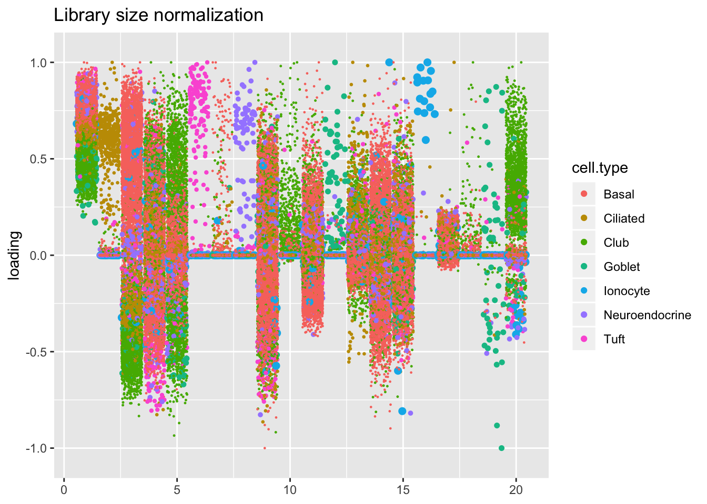
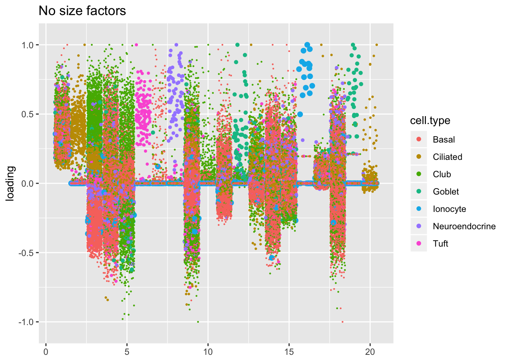

Last updated: 2019-09-03
Checks: 6 0
Knit directory: scFLASH/
This reproducible R Markdown analysis was created with workflowr (version 1.2.0). The Report tab describes the reproducibility checks that were applied when the results were created. The Past versions tab lists the development history.
Great! Since the R Markdown file has been committed to the Git repository, you know the exact version of the code that produced these results.
Great job! The global environment was empty. Objects defined in the global environment can affect the analysis in your R Markdown file in unknown ways. For reproduciblity it’s best to always run the code in an empty environment.
The command set.seed(20181103) was run prior to running the code in the R Markdown file. Setting a seed ensures that any results that rely on randomness, e.g. subsampling or permutations, are reproducible.
Great job! Recording the operating system, R version, and package versions is critical for reproducibility.
Nice! There were no cached chunks for this analysis, so you can be confident that you successfully produced the results during this run.
Great! You are using Git for version control. Tracking code development and connecting the code version to the results is critical for reproducibility. The version displayed above was the version of the Git repository at the time these results were generated.
Note that you need to be careful to ensure that all relevant files for the analysis have been committed to Git prior to generating the results (you can use wflow_publish or wflow_git_commit). workflowr only checks the R Markdown file, but you know if there are other scripts or data files that it depends on. Below is the status of the Git repository when the results were generated:
Ignored files:
Ignored: .DS_Store
Ignored: .Rhistory
Ignored: .Rproj.user/
Ignored: data/droplet.rds
Ignored: output/backfit/
Ignored: output/prior_type/
Ignored: output/size_factors/
Ignored: output/var_type/
Untracked files:
Untracked: analysis/NBapprox.Rmd
Untracked: analysis/pseudocount_redux.Rmd
Untracked: analysis/trachea4.Rmd
Untracked: code/missing_data.R
Untracked: code/pseudocount/
Untracked: code/pseudocounts.R
Untracked: code/trachea4.R
Untracked: data/Ensembl2Reactome.txt
Untracked: data/hard_bimodal1.txt
Untracked: data/hard_bimodal2.txt
Untracked: data/hard_bimodal3.txt
Untracked: data/mus_pathways.rds
Untracked: docs/figure/pseudocount2.Rmd/
Untracked: docs/figure/pseudocount_redux.Rmd/
Untracked: output/pseudocount/
Unstaged changes:
Modified: analysis/index.Rmd
Modified: analysis/pseudocount.Rmd
Modified: code/sc_comparisons.R
Note that any generated files, e.g. HTML, png, CSS, etc., are not included in this status report because it is ok for generated content to have uncommitted changes.
These are the previous versions of the R Markdown and HTML files. If you’ve configured a remote Git repository (see ?wflow_git_remote), click on the hyperlinks in the table below to view them.
| File | Version | Author | Date | Message |
|---|---|---|---|---|
| Rmd | 27a4d37 | Jason Willwerscheid | 2019-09-03 | wflow_publish(“analysis/size_factors.Rmd”) |
| html | 2fe674b | Jason Willwerscheid | 2019-09-01 | Build site. |
| Rmd | 27a452a | Jason Willwerscheid | 2019-09-01 | wflow_publish(“analysis/size_factors.Rmd”) |
| html | 97767cf | Jason Willwerscheid | 2019-08-24 | Build site. |
| Rmd | 67f1730 | Jason Willwerscheid | 2019-08-24 | wflow_publish(“analysis/size_factors.Rmd”) |
I’m interested in the family of data transformations \[ Y_{ij} = \log \left( \frac{X_{ij}}{\lambda_{j}} + \alpha \right), \] where the \(X_{ij}\)s are raw counts, the \(\lambda_j\)s are cell-specific “size factors,” and \(\alpha\) is a “pseudocount” that must be added to avoid taking logarithms of zeros.
Note that, by subtracting \(\log \alpha\) from each side (and letting this constant be absorbed into the “mean factor” fitted by flashier), I can instead consider the family of sparity-preserving transformations \[ Y_{ij} = \left( \frac{X_{ij}}{\alpha \lambda_j} + 1 \right). \]
Without loss of generality, I constrain the size factors to have median one. In this analysis, I fix \(\alpha = 1\); in a subsequent analysis, I’ll consider the effect of varying the pseudocount.
source("./code/utils.R")
droplet <- readRDS("./data/droplet.rds")
droplet <- preprocess.droplet(droplet)
res <- readRDS("./output/size_factors/sizefactor_fits.rds")I consider three methods. The method which I’ve been using in previous analyses normalizes cell counts so that all scaled cells have the same total count. That is, letting \(n_j\) be the cell-wise sum \(\sum_i X_{ij}\), it sets \[ \lambda_j = n_j / \text{median}_\ell(n_\ell) \] This method, commonly known as “library size normalization,” has been criticized because library size is strongly correlated with the expression levels of the most highly expressed genes, so that normalizing by library size tends to suppress relevant variation in those genes’ expression.
More sophisticated methods have been proposed. I particularly like an approach by Aaron Lun, Karsten Bach, and John Marioni which pools cells together and uses robust statistics to get more accurate estimates of size factors. The approach, detailed here, is implemented in the R package scran. It took about minute to calculate size factors for the Montoro et al. droplet dataset.
A second approach that has gained some traction is Rhonda Bacher’s method implemented in the R package SCnorm. I attempted to run it on the Montoro et al. dataset, but it simply set all scale factors to one (and it took a very long time to do so).
The third method I consider is to not use scale factors at all. This is not as dumb as it might seem! Write the EBMF model as \[ Y = \ell f' + LF' + E, \] where \(\ell f'\) is the first factor fitted by flashier. This factor, which I usually refer to as the “mean factor,” typically accounts for by far the largest proportion of variance explained. Then, \[ X_{ij} + 1 = e^{\ell_i} e^{f_j} \exp \left( (LF')_{ij} + E_{ij} \right), \] so that \(f\) essentially acts as a vector of size factors. The difference is that this scaling is done after the log1p transformation rather then before.
In this analysis, I’ll argue that it’s worth it to calculate scran size factors. Qualitatively, factors are very similar, but there are measurable differences in fits, it doesn’t take very long to calculate the size factors, and in many ways it’s the correct thing to do.
All fits were produced by adding 20 “greedy” factors to the Montoro et al. droplet dataset. The code can be viewed here.
The size factors obtained using scran are very different from the size factors obtained via library size normalization. In particular, scran yields a somewhat narrower range of size factors.
sf.df <- data.frame(libsize = res$libsize$size.factors, scran = res$scran$size.factors)
ggplot(sf.df, aes(x = libsize, y = scran)) +
geom_point(size = 0.2) +
geom_abline(slope = 1) +
labs(x = "library size normalization", y = "scran")
| Version | Author | Date |
|---|---|---|
| 97767cf | Jason Willwerscheid | 2019-08-24 |
I use a change-of-variables formula to compare ELBOs. It’s probably not surprising that the most sophisticated method (scran) does best. The improvement in the ELBO is substantial: it’s approximately 600,000, which is the equivalent of 8-10 greedy factors. More surprisingly, library-size normalization does very poorly: worse, in fact, than not normalizing at all.
method.names <- c("No size factors",
"Library size normalization",
"scran size factors")
elbo.df <- data.frame(method = method.names,
elbo = sapply(res, function(x) x$fl$elbo + x$elbo.adj))
ggplot(elbo.df, aes(x = method, y = elbo)) +
geom_point() +
scale_x_discrete(limits = method.names) +
labs(x = NULL, y = "ELBO")
The distribution of \(p\)-values is very similar across methods, but the small differences confirm the above ranking: scran does best, while library-size normalization does worst. (I omit the individual plots, which are nearly indistinguishable to the eye.)
KL.df <- data.frame(method = method.names,
KL = sapply(res, function(x) x$p.vals$KL.divergence))
ggplot(KL.df, aes(x = method, y = KL)) +
geom_bar(stat = "identity") +
scale_x_discrete(limits = method.names) +
labs(x = NULL, y = "KL divergence relative to uniform")
| Version | Author | Date |
|---|---|---|
| 2fe674b | Jason Willwerscheid | 2019-09-01 |
Using the log likelihood of the implied discrete distribution — which, I’ve suggested, might be more reliable than the ELBO when different data transformations are in play — the relative rankings of the methods are more in line with what I’d expect. Once again, scran wins out.
llik.df <- data.frame(method = method.names,
llik = sapply(res, function(x) x$p.vals$llik))
ggplot(llik.df, aes(x = method, y = llik)) +
geom_point() +
scale_x_discrete(limits = method.names) +
labs(x = NULL, y = "Log likelihood of implied distribution")Qualitatively, factors are very similar across methods. I don’t see anything worth commenting on here.
plot.factors(res$noscale$fl, droplet$cell.type, title = "No size factors")
plot.factors(res$libsize$fl, droplet$cell.type, title = "Library size normalization")
plot.factors(res$scran$fl, droplet$cell.type, title = "scran")
sessionInfo()R version 3.5.3 (2019-03-11)
Platform: x86_64-apple-darwin15.6.0 (64-bit)
Running under: macOS Mojave 10.14.6
Matrix products: default
BLAS: /Library/Frameworks/R.framework/Versions/3.5/Resources/lib/libRblas.0.dylib
LAPACK: /Library/Frameworks/R.framework/Versions/3.5/Resources/lib/libRlapack.dylib
locale:
[1] en_US.UTF-8/en_US.UTF-8/en_US.UTF-8/C/en_US.UTF-8/en_US.UTF-8
attached base packages:
[1] stats graphics grDevices utils datasets methods base
other attached packages:
[1] flashier_0.1.15 ggplot2_3.2.0 Matrix_1.2-15
loaded via a namespace (and not attached):
[1] Rcpp_1.0.1 plyr_1.8.4 compiler_3.5.3
[4] pillar_1.3.1 git2r_0.25.2 workflowr_1.2.0
[7] iterators_1.0.10 tools_3.5.3 digest_0.6.18
[10] evaluate_0.13 tibble_2.1.1 gtable_0.3.0
[13] lattice_0.20-38 pkgconfig_2.0.2 rlang_0.3.1
[16] foreach_1.4.4 parallel_3.5.3 yaml_2.2.0
[19] ebnm_0.1-24 xfun_0.6 withr_2.1.2
[22] stringr_1.4.0 dplyr_0.8.0.1 knitr_1.22
[25] fs_1.2.7 rprojroot_1.3-2 grid_3.5.3
[28] tidyselect_0.2.5 glue_1.3.1 R6_2.4.0
[31] rmarkdown_1.12 mixsqp_0.1-119 reshape2_1.4.3
[34] ashr_2.2-38 purrr_0.3.2 magrittr_1.5
[37] whisker_0.3-2 MASS_7.3-51.1 codetools_0.2-16
[40] backports_1.1.3 scales_1.0.0 htmltools_0.3.6
[43] assertthat_0.2.1 colorspace_1.4-1 labeling_0.3
[46] stringi_1.4.3 pscl_1.5.2 doParallel_1.0.14
[49] lazyeval_0.2.2 munsell_0.5.0 truncnorm_1.0-8
[52] SQUAREM_2017.10-1 crayon_1.3.4